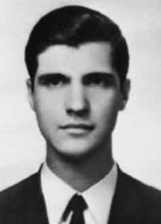

Roberto
Macarini
CIRCUNSTÂNCIAS DA MORTE
Roberto foi preso no dia 27/4/1970 e torturado na sede da OBAN/DOI-CODI, em São Paulo (SP), pelas equipes do capitão Benoni de Arruda Albernaz e capitão Homero César Machado. No dia posterior a sua prisão, já bastante debilitado, foi levado pelos agentes policiais a uma suposta reunião com companheiros, no Viaduto do Chá. Segundo a falsa versão dos órgãos de segurança, ao chegar ao local, Roberto se jogou do alto do viaduto e teve morte instantânea.
De acordo com relatório elaborado pelo Comitê de Solidariedade aos Presos Políticos do Brasil sobre os presos políticos de São Paulo, que foram mortos por agentes estatais, Roberto foi preso no dia 27/4/1970 pela OBAN/DOI-CODI e torturado pela “equipe C”, integrada pelo escrivão de polícia Gaeta (conhecido como “Mangabeira”), pelo funcionário do Departamento da Polícia Federal (DPF) de apelido “Alemão”, pelo carcereiro, também da DPF, Maurício (conhecido por “Lungaretti”) e pelo tenente da Aeronáutica Alberto.
No dia 28 de abril, o militante foi retirado da OBAN/DOI-CODI por uma equipe integrada pelo capitão Coutinho, pelo capitão Tomás, pelo cabo conhecido como “DKW” (os três da Polícia Militar de São Paulo), pelo capitão do Exército Benoni de Arruda Albernaz, pelo investigador do Departamento Estadual de Investigações Criminais Paulo Rosa, pelo tenente do CENIMAR conhecido como “Marinheiro” e pelo delegado de polícia “Dr. Raul”, entre outros, e levado para o Viaduto do Chá, de onde foi jogado pelos agentes, por volta das 9 horas da manhã.
A denúncia seria encaminhada à Comissão Nacional dos Bispos do Brasil (CNBB), mas o documento foi apreendido pelo DOPS/SP, em poder de Ronaldo Mouth Queiroz, militante da Ação Libertadora Nacional (ALN), também assassinado pelo regime. Documentos do DOPS/SP, encontrados no Arquivo do Estado de São Paulo, também contribuem para a desconstrução da falsa versão dos órgãos de segurança. Entre esses documentos, uma ficha de Roberto Macarini informa, textualmente, que o militante foi torturado por equipe do Exército, por dois dias consecutivos.
Em versão contraditória às demais fontes arroladas, a certidão de óbito de Roberto, registrada no dia 18/4/1970, informa como data de morte o dia anterior, dez dias antes da data indicada pelos órgãos de segurança para sua prisão, em decorrência de “choque traumático, lesões traumáticas crânio encefálicas”. A mesma causa mortis foi indicada em laudo necroscópico assinado pelos médicos-legistas Samuel Haberkorn e Paulo Augusto Querioz. Rocha, que também datavam a morte do dia 17 de abril. A requisição de exame cadavérico solicitada pelo delegado Michel Miguel, apresentava a letra “T” ao lado do nome de Roberto, registro recorrente em casos que envolviam pessoas consideradas “terroristas”.
Relatório produzido pelo Ministro da Marinha e encaminhado ao Ministro da Justiça Maurício Corrêa, já em 1993, corrobora com a versão de suicídio divulgada pelos órgãos de segurança. O Ministério Público Federal de São Paulo propôs, em 2010, Ação Civil Pública, protocolada sob o nº. 0021967-66.2010.4.03.6100, com o objetivo de responsabilizar oscapitães reformados Homero César Machado e João Thomaz, pela tortura e morte de Roberto Macarini. Roberto foi sepultado pela família no Cemitério de Vila Formosa, em São Paulo (SP).
Roberto was arrested on 4/27/1970 and tortured at the headquarters of OBAN/DOI-CODI, in São Paulo (SP), by the teams of captain Benoni de Arruda Albernaz and captain Homero César Machado. The day after his arrest, already quite weakened, he was taken by police officers to a supposed meeting with companions, at Viaduto do Chá. According to the false version of the security agencies, upon arriving at the scene, Roberto threw himself from the top of the viaduct and died instantly.
According to a report prepared by the Brazilian Political Prisoners Solidarity Committee on political prisoners in São Paulo, who were killed by state agents, Roberto was arrested on 4/27/1970 by OBAN/DOI-CODI and tortured by “team C”, made up of the police clerk Gaeta (known as “Mangabeira”), by the Federal Police Department (DPF) employee nicknamed “German”, by the jailer, also from the DPF, Maurício (known as “Lungaretti”) and Air Force Lieutenant Alberto.
On April 28, the militant was removed from OBAN/DOI-CODI by a team made up of Captain Coutinho, Captain Tomás, the corporal known as “DKW” (the three from the São Paulo Military Police), Army Captain Benoni de Arruda Albernaz, the State Department of Criminal Investigations investigator Paulo Rosa, the CENIMAR lieutenant known as “Marinheiro” and the police chief “Dr. Raul”, among others. and taken to Viaduto do Chá, from where he was thrown by the agents, at around 9 am.
The complaint would be forwarded to the National Commission of Brazilian Bishops (CNBB), but the document was seized by the DOPS/SP, in the possession of Ronaldo Mouth Queiroz, a militant of Ação Libertadora Nacional (ALN), also murdered by the regime. DOPS/SP documents, found in the São Paulo State Archive, also contribute to the deconstruction of the false version of the security agencies. Among these documents, a file from Roberto Macarini states, verbatim, that the militant was tortured by an Army team for two consecutive days.
In a version contradictory to the other sources listed, Roberto's death certificate, registered on 4/18/1970, states the previous day as his date of death, ten days before the date indicated by security agencies for his arrest, as a result of “traumatic shock, traumatic brain injuries”. The same cause of death was indicated in a necroscopic report signed by coroners Samuel Haberkorn and Paulo Augusto Querioz. Rocha, who also dated his death on April 17th. The request for a cadaveric examination requested by delegate Michel Miguel had the letter “T” next to Roberto’s name, a recurring occurrence in cases involving people considered “terrorists”.
Report produced by the Minister of the Navy and sent to the Minister of Justice Maurício Corrêa, back in 1993, corroborates the version of suicide published by security agencies. In 2010, the Federal Public Ministry of São Paulo proposed a Public Civil Action, filed under no. 0021967-66.2010.4.03.6100, with the aim of holding retired captains Homero César Machado and João Thomaz responsible for the torture and death of Roberto Macarini. Roberto was buried by his family in the Vila Formosa Cemetery, in São Paulo (SP).
Roberto fue detenido el 27/04/1970 y torturado en la sede de la OBAN/DOI-CODI, en São Paulo (SP), por los equipos del capitán Benoni de Arruda Albernaz y del capitán Homero César Machado. Al día siguiente de su detención, ya bastante debilitado, fue llevado por agentes de policía a una supuesta reunión con compañeros, en el Viaduto do Chá. Según la versión falsa de los organismos de seguridad, al llegar al lugar, Roberto se arrojó desde lo alto del viaducto y murió en el instante.
Según un informe elaborado por el Comité de Solidaridad con los Presos Políticos de Brasil sobre los presos políticos asesinados en São Paulo por agentes estatales, Roberto fue detenido el 27/04/1970 por la OBAN/DOI-CODI y torturado por el “equipo C”, integrado por el oficial de policía Gaeta (conocido como “Mangabeira”), por el empleado del Departamento de Policía Federal (DPF) apodado “alemán”, por el carcelero, también del DPF, Maurício (conocido como “Lungaretti”) y el teniente de la Fuerza Aérea Alberto.
El 28 de abril, el militante fue retirado del OBAN/DOI-CODI por un equipo integrado por el capitán Coutinho, el capitán Tomás, el cabo conocido como “DKW” (los tres de la Policía Militar de São Paulo), el capitán del Ejército Benoni de Arruda Albernaz, el investigador del Departamento de Investigaciones Criminales del Estado Paulo Rosa, el teniente del CENIMAR conocido como “Marinheiro” y el jefe de policía “Dr. Raúl”, entre otros. y conducido al Viaduto do Chá, de donde fue arrojado por los agentes, alrededor de las 9 de la mañana.
La denuncia sería remitida a la Comisión Nacional de los Obispos de Brasil (CNBB), pero el documento fue incautado por el DOPS/SP, en posesión de Ronaldo Boca Queiroz, militante de la Acción Libertadora Nacional (ALN), también asesinado por el régimen. Documentos del DOPS/SP, encontrados en el Archivo del Estado de São Paulo, también contribuyen a la deconstrucción de la versión falsa de los organismos de seguridad. Entre esos documentos, un expediente de Roberto Macarini relata, textualmente, que el militante fue torturado por un equipo del Ejército durante dos días consecutivos.
En versión contradictoria con las demás fuentes citadas, el certificado de defunción de Roberto, registrado el 18/4/1970, señala como fecha de su muerte el día anterior, diez días antes de la fecha indicada por los organismos de seguridad para su detención, como consecuencia de “shock traumático, lesiones cerebrales traumáticas”. La misma causa de muerte fue indicada en un informe necroscópico firmado por los forenses Samuel Haberkorn y Paulo Augusto Querioz. Rocha, quien también fechó su muerte el 17 de abril. El pedido de examen cadavérico solicitado por el delegado Michel Miguel tenía la letra “T” al lado del nombre de Roberto, algo recurrente en casos que involucran a personas consideradas “terroristas”.
Informe elaborado por el Ministro de Marina y enviado al Ministro de Justicia Maurício Corrêa, allá por 1993, corrobora la versión del suicidio publicada por los organismos de seguridad. En 2010, el Ministerio Público Federal de São Paulo propuso una Acción Civil Pública, presentada bajo el n. 0021967-66.2010.4.03.6100, con el objetivo de responsabilizar a los capitanes retirados Homero César Machado y João Thomaz por la tortura y muerte de Roberto Macarini. Roberto fue enterrado por su familia en el cementerio de Vila Formosa, en São Paulo (SP).